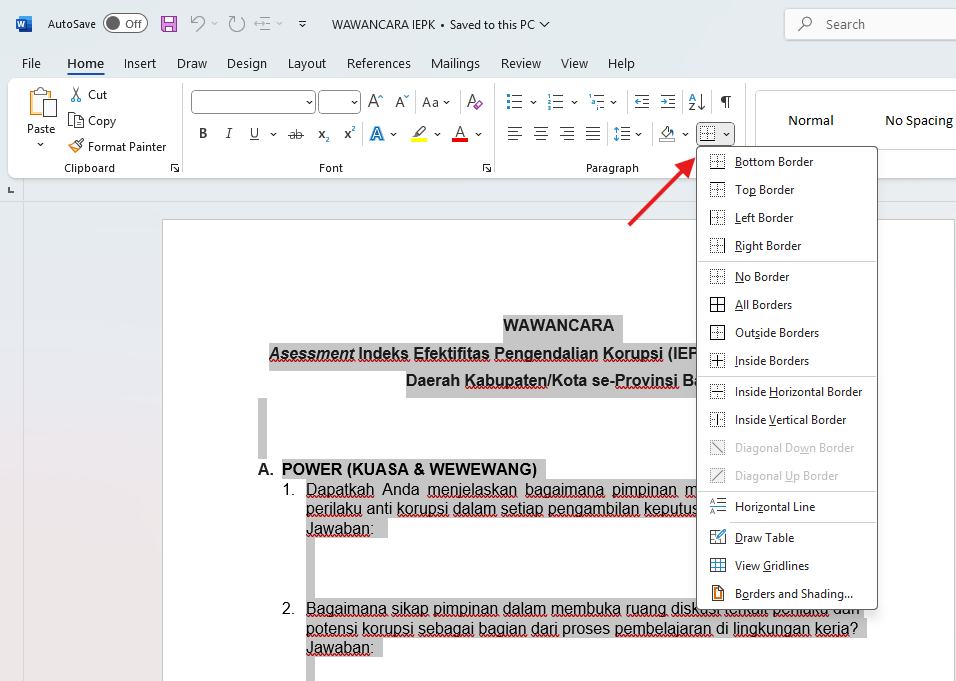
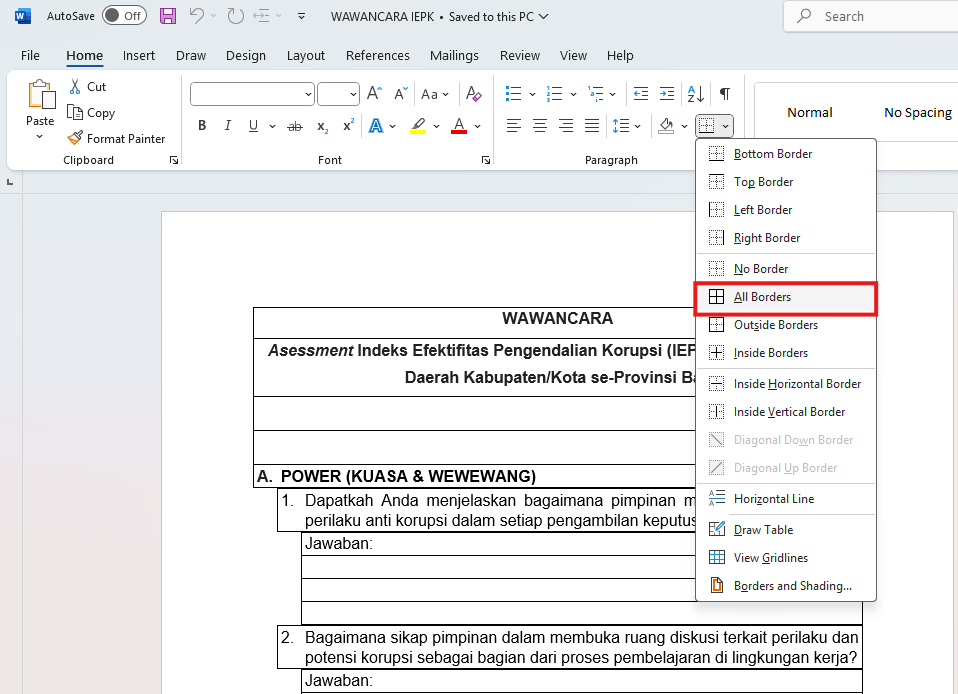
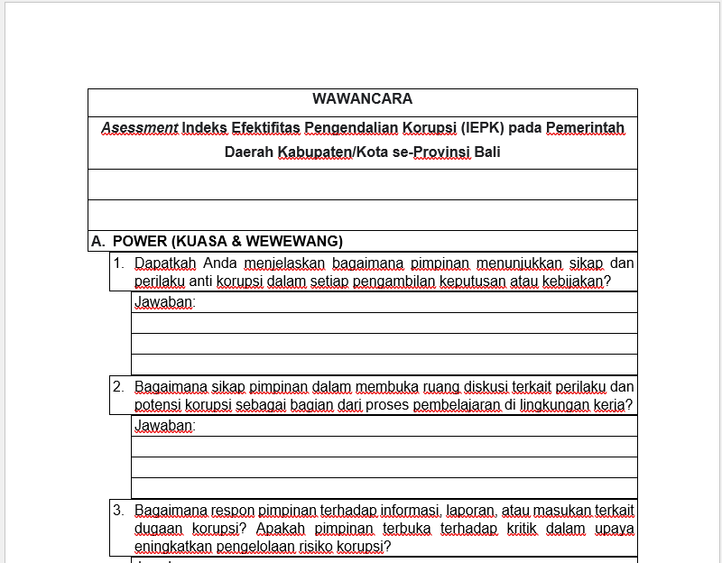

Penjelasan Masalah
Masalah ini dapat terjadi karena beberapa hal dan dapat diatasi dengan penyelesaian masalah yang cukup mudah.
Langkah Penyelesaian 1
- Pastikan apakah dokumen disusun dengan tabel. Teks tidak bisa disusun kemungkinan karena di format dengan tabel. Seleksi halaman yang diinginkan atau seleksi semua dokumen menggunakan ctrl + a.
- Periksa visibilitas border melalui tab home, paragraph, kemudian border. 
- Klik dropdown pada border kemudian pilih all border untuk memperlihatkan border. 
- Jika dokumen disusun dengan tabel maka akan terlihat seperti gambar dibawah. langkah selanjutnya adalah menyesuaikan format penulisan dengan tabel, lalu sembunyikan border dengan cara yang sama. 